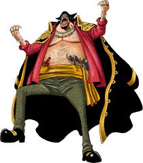
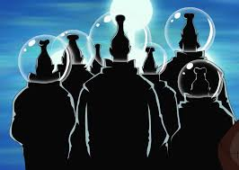
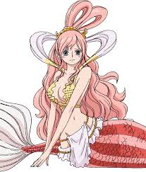
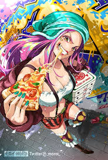
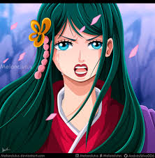
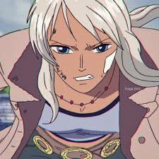
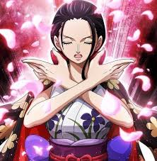
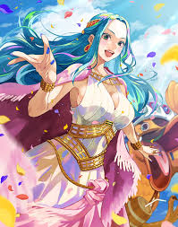
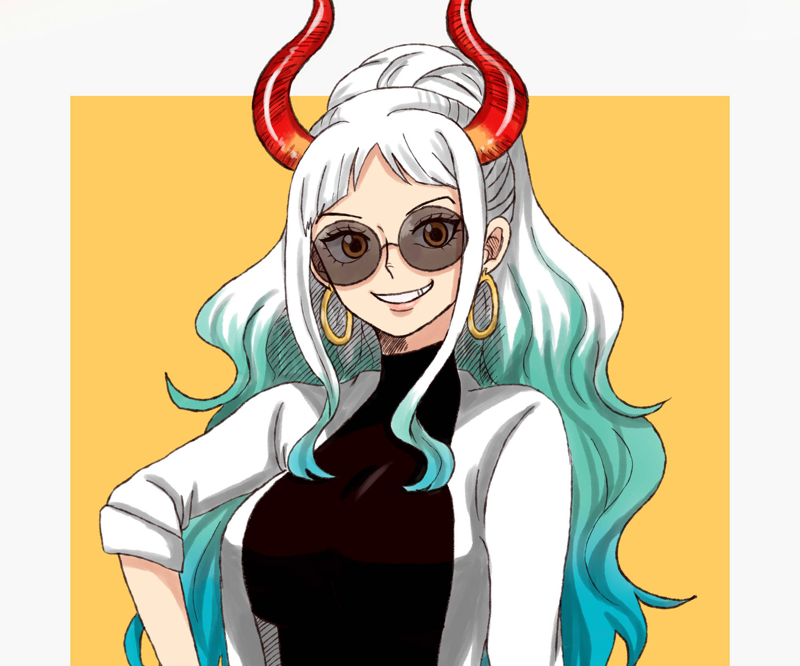
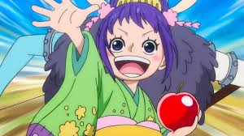

INICIO
¡Bienvenido al mundo de *One Piece*! Únete a Monkey D. Luffy y su tripulación en su búsqueda del legendario tesoro, el One Piece, para convertirse en el Rey de los Piratas.
¡Bienvenido al mundo de *One Piece*! Únete a Monkey D. Luffy y su tripulación en su búsqueda del legendario tesoro, el One Piece, para convertirse en el Rey de los Piratas.
One Piece (Wan Pīsu) es un Manga y Anime del autor Eiichirō Oda. La serie narra la historia de un joven llamado Monkey D. Luffy, que inspirado por su amigo pirata Shanks, comienza un viaje para alcanzar su sueño, ser el Rey de los piratas, para lo cual deberá encontrar el tesoro One Piece dejado por el anterior rey de los piratas Gol D. Roger. El manga es publicado en la revista Shōnen Jump de Shūeisha desde 1997 y lleva editados un total de 60 volúmenes. Por otra parte, el anime es realizado por Toei Animation y se transmite en Fuji TV desde agosto de 1999 contando con 527 episodios hasta la fecha. Larp editores se encarga de su publicación en Argentina, Planeta DeAgostini se encarga de la publicación del manga en España y en México fue publicado por Editorial Toukan. Y posiblemente haya una nueva reimpresión en Grupo Editorial Vid. One Piece es el manga más vendido de la historia de la revista Shōnen Jump, con más de 158 millones de copias vendidas. En la encuesta realizada por la Agencia de Cultura Japonesa, sobre los 50 mejores animes y mangas de Japón, One Piece alcanzó el puesto 11. El anime también ha contado con reconocimientos. En el ranking publicado por TV Asahi de 2005, sobre los 100 mejores animes de todos los tiempos, basado en una encuesta online en Japón, One Piece alcanzó el puesto 6. Eiichiro Oda está muy influenciado por el manga Dragon Ball.
Algunos de los miembros de esta peligrosa tripulación son menos conocidos, pero tienen habilidades únicas y pueden influir en la historia de Luffy y sus amigos.
Aunque algunos personajes nobles son mencionados, muchos permanecen en la sombra, tomando decisiones que afectan al mundo entero sin ser vistos.
La princesa de los Tritones es conocida por su belleza y su gran corazón. A pesar de su vulnerabilidad, su conexión con los antiguos reyes del mar es crucial para la historia.
Usopp es un tirador habilidoso con un gran talento para inventar historias. Aunque inicialmente era un cobarde, se convierte en un valiente guerrero.
La mujer del samurái Kozuki Oden tiene un papel importante en la saga de Wano, y su historia de viaje en el tiempo es fascinante.
La madre de Nico Robin, es una arqueóloga valiente que juega un papel significativo en el pasado de Robin y la historia de Ohara.
Robin es una arqueóloga experta que busca descubrir la historia perdida del mundo. Tiene el poder de reproducir partes de su cuerpo gracias a la Fruta Hana Hana.
Aunque es más conocida por su papel como princesa de Alabasta, su diseño y carácter también la hacen un personaje atractivo.
Introducida en el arco de Wano, Yamato tiene un diseño único y una personalidad fuerte que ha capturado la atención de muchos fans.
Aunque es más joven, su personaje tiene un encanto que ha resonado con la audiencia.
Contacto
+591 12345678
Correo
correo@gmail.com
Dirección
AV. plan 11-A